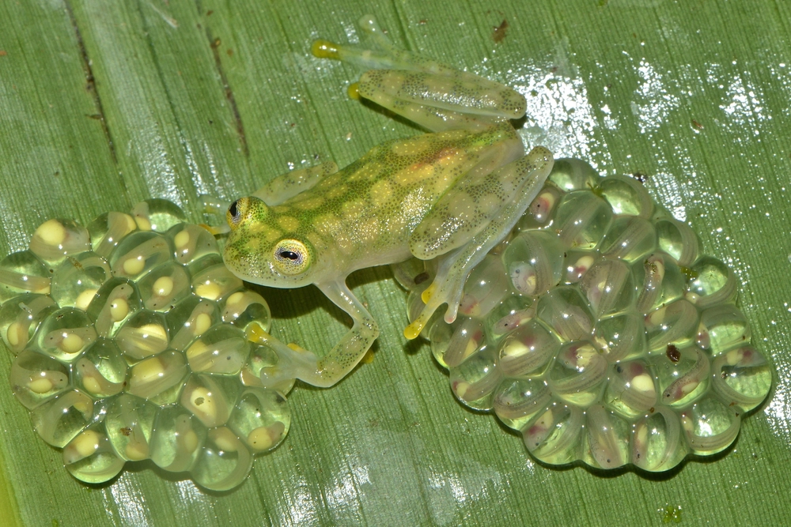

1.Arboreal Lifestyle: These frogs are arboreal, meaning they spend most of their lives in trees. They are often found near streams and rivers, where they come down to mate.
2.Sticky Toes: Glass frogs have sticky toe pads that help them climb and grip various surfaces, making them adept at navigating their arboreal habitats.
3.Nocturnal Behavior: They are primarily nocturnal, hiding during the day and becoming active at night to hunt for small invertebrates like flies and spiders.

Image Caption
The diet of glass frogs primarily consists of insects and other small invertebrates. They are strictly carnivorous and feed on a variety of prey, including:
Crickets
Ants
Moths
Termites
Caterpillars
Flies
Beetles
Glass frogs are called glass frogs because of their translucent skin, which allows their internal organs, including the heart, to be visible. This feature aids in their camouflage, making them difficult to spot by predators when they sleep on leaves. The name reflects their appearance, which is primarily lime green on the outside and transparent underneath, giving them a unique look that helps them blend into their surroundings.